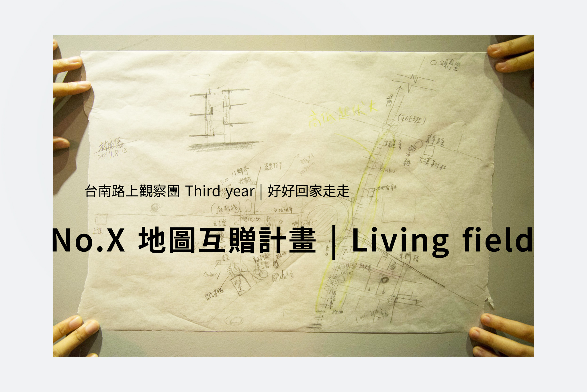

｜台南路上觀察團 地圖互贈計畫
「漫遊者浸淫在觀看之樂，擅長感同身受，世界在他們眼裡宛如一幅浮世繪。」（蘇珊．桑塔格）
成立兩年以來，台南路上觀察團多以特定場域或議題作為觀察內容，如：城市記號、觀光、舊魚市場、公園等，試圖讓個人透過觀察，與環境、社會產生更多討論。 第三年起，我們試著將觀察視野回歸生活，以「日常生活」為場域，透過在地人與外來者兩者的觀察視角，進行觀察交換。
｜活動形式/步驟:
- 個人印象：「在地人」繪製個人生活場域地圖：如飲食、生活行為（倒垃圾、移動路線）、周遭環境印象等.......。
- 個人生活文件建立：主辦團隊整理「在地人」的生活內容成為觀察文件（地圖、文字、影片）。
- 觀察出團：「外來者」（其他團員）將得到一份「在地人」地圖，並以此觀察文件為導引進行路上觀察的出團，最終將結果繪製成地圖。
- 討論：「在地人」獲贈「外來者」的觀察成果所繪製之地圖，雙方進行交換與討論。
｜已進行:
- no.1：宛儀的日常
- 出團時間：2017/08/27（日）16:00-19:00
- 觀察場域：東門圓環一帶